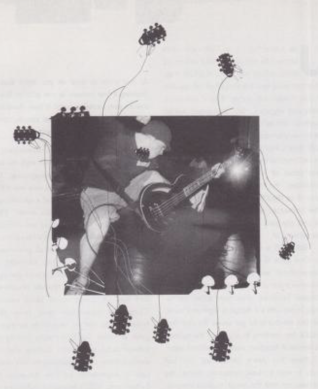

|
prepared to take care of what's yours. Set a good example, set the standard, tell kids that they're fucking up and that someone could get hurt. Hardcore is obviously something that has ouched you for a long time. How has your relationship with the scene changed since your "salad days." especially now after going through such a close call on tour? Anderson. It's different, of course. You go from seeing bands and older kids as larger- han-life people, to them becoming your dearest friends. I try to stay away from all the back in the day" mantras you hear from people who've been around and have become bitter know-it-alls, like Things are not what they used to be!" No shie, genius, thing! change. Why would hardcore be any differ- ent? Why would you want it any other way? The scene isn't what it was. but neither are the people who were tavolved. Change does n't fill into a good/bad category, it's rodiy. T see a lot of mockery and elitiam towards new kids, which is ridicalous. Te's as if some of the dudes that know everything about hardcore. know everything about everything. I'm pretty sure we could find a million subjects that they don't know shit about. I don't know what people get out of thinking that everyone around them is an idiot. I think that would feel terrible, ahitty, and lonely. Man, I don't knaw any of these kidi!" Well, that's your faule! Granted it can be a little disheartening to come to realize that all your friendibipa have faded, but take the time to talk to some- one new. Jesus. Just stop the fucking whin- ing-sorry, was that a little caustie? That kind of thinking is so cotamon, and it gets under my skin. I We get into hardcore because we hear it and it kicks our ass Then we get older and we get bored and so we start to ruin it? It's a really bad idea to get 1o0 big for your britches. This is hardcore, it is supposed to be for the outsiders. so there should be no place for that kind of thing. IF that's the coe. then fuck that. Te's not the new kids that ruin a scene, it's the old guys who walk around like they re hot shit. That judgmental attitude doesn't get you anywhere. ® |
 |